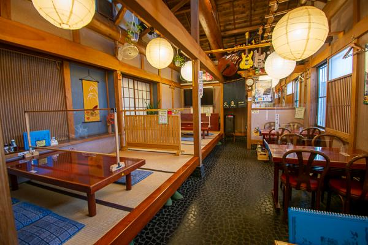
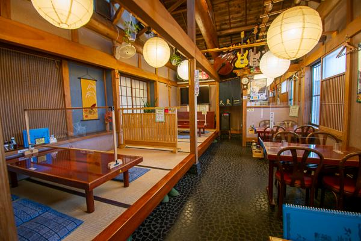
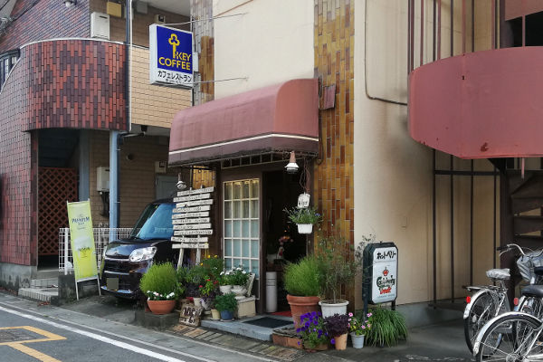
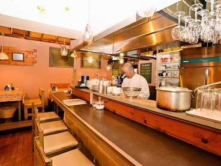
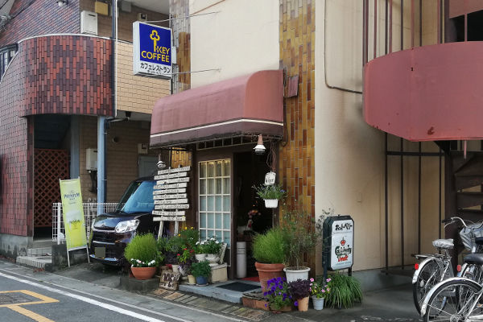
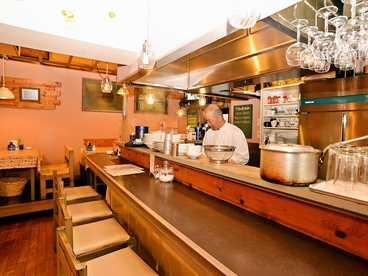
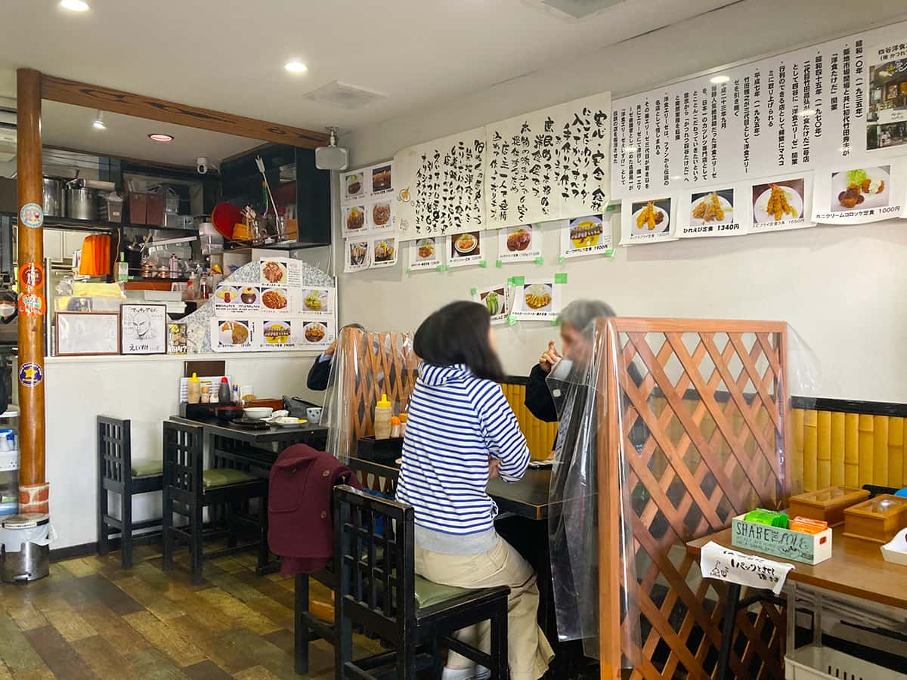
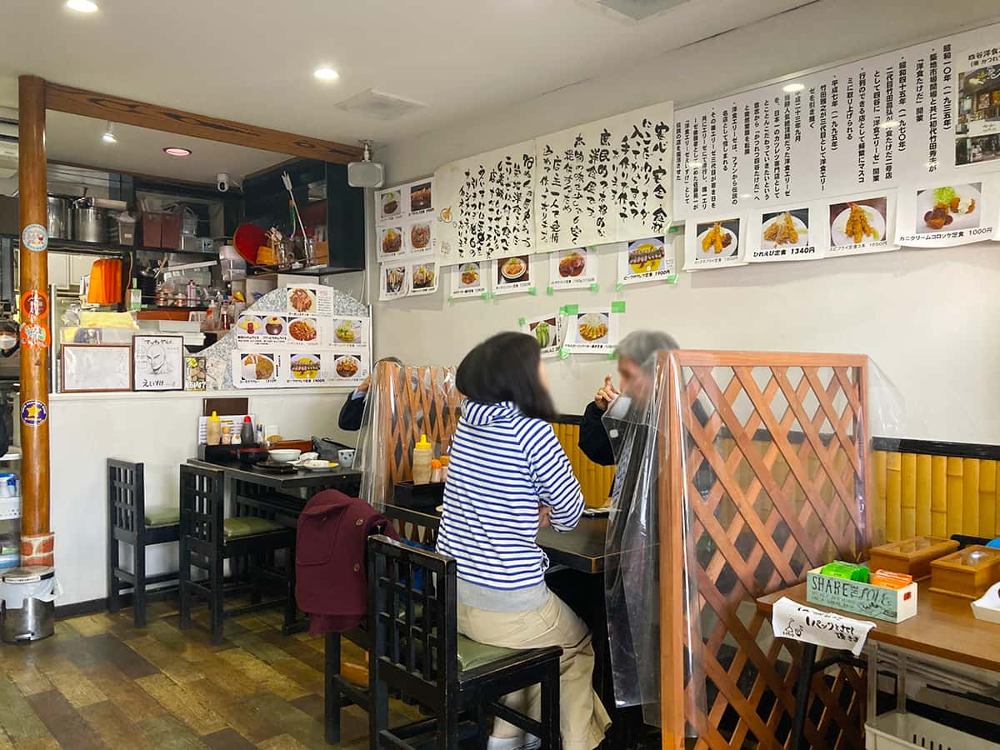
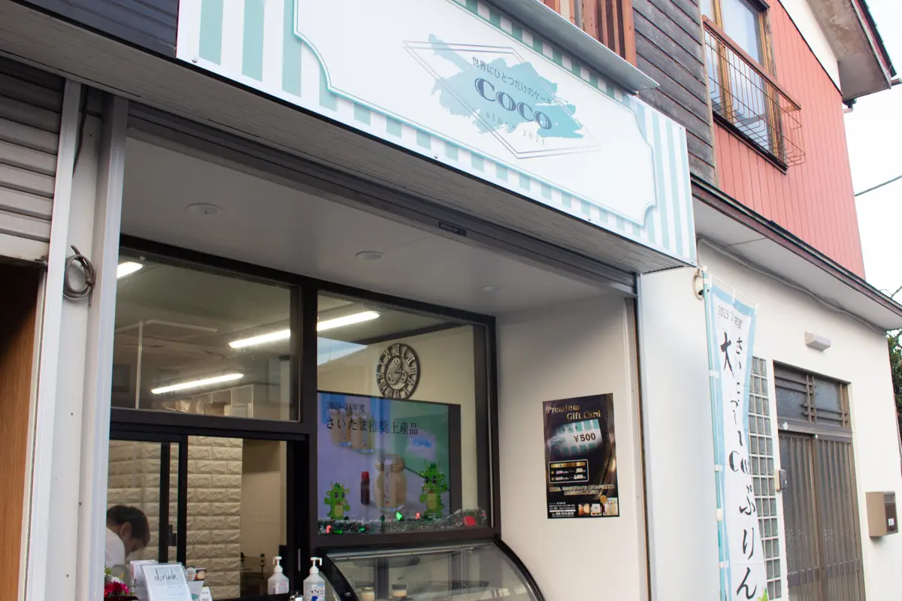
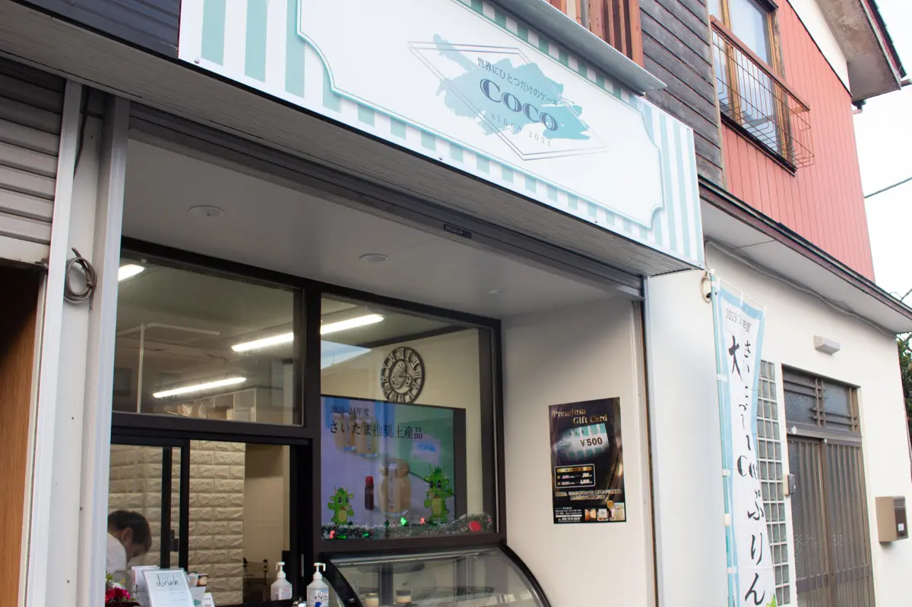

今回は私達の地元である、魅力度ランキング46位の埼玉県のグルメを紹介します。

過去何度かテレビのグルメ番組で紹介されたことがある人気店です。店内は純和風で落ち着いた雰囲気で、おもむきのあるお店です。
普段日常的に食べているうどんとは異なり、滑らかでしなやかな食感が特徴です。
川幅みそ煮込みうどん（９９０円）はメディアでもたびたび取り上げられる人気メニューです。川幅２５３７うどん（８９０円）は日本一の川幅２５３７メートルにかけて、２は肉、５は卵、３は水菜、７はナスと、それぞれの数字にちなんだ食材を使用しています。

 

（２）安田屋 わらじカツ丼
小鹿野町の「安田屋」は、カツの枚数が選べるグルメ丼を提供しているお店で、レトロな雰囲気を醸し出しています。
埼玉県秩父地方の名物「わらじカツ丼」は、その名の通り履物のわらじのような大きさのトンカツが特徴的な郷土料理です。
丼からはみ出すほどの巨大なカツは、薄く伸ばされたロース肉を使用し、サクサクの衣で揚げられています。甘辛い醤油ベースのタレをくぐらせたカツは、ご飯との相性が抜群で、ボリューム満点の一品となっています。
（１）Cafeレストラン ホット・ベリー 朝産み卵のオムライス
アメリカンカントリーを思わせる店内で、BGMはビートルズを中心に70~80年代の曲が流れています。
このお店のおすすめ料理は朝産み卵のオムライスです。狭山の養鶏場から毎朝産みたてを仕入れており、味の濃い有精卵をたっぷり３つ使ったオムライスになっています。
食後はコーヒーを楽しんでもらいたいと、コーヒーの味にもこだわっているそうです。ランチやティータイムにぜひ行ってみてください。
 



昼・夜はいつも行列ができている人気の洋食店です。こちらでは、ビーフカツレツやハンバーグ、オムライスなどの、「ザ・洋食店」というメニューがズラリと並んでいます。
このお店の名物であり、圧倒的な人気を誇るのが、「ビーフカツレツ定食」です。
この「ビーフカツレツ定食」では「デミグラスソース」と「えいすけオリジナルソース」の二つのソースから選ぶことができます。特に「えいすけオリジナルソース」は強い酸味とガーリックの香りが口いっぱいに広がり、また食べたくなるやみつきの一品です。
 

Cocoは大宮駅西口から歩いて16分。住宅街の一角にお店をかまえています。
Cocoは、コロナウイルスの影響が少しずつ落ち着き始めた2022年に開業。まだまだ新しいお店にも関わらず、Googleマップでは4.8の高評価を獲得しています。
大宮Cocoプリンは、2023-24年度のさいたま推奨土産品にも認定された人気商品です。舌触りはとってもなめらかで、口いっぱいに甘さが広がります。
別添えのカラメルを加えると、ガラッと味が変わって、一度で二通りの味を楽しむことができます。
 

全国でもわずか６軒しかない、天然氷の蔵元が営む専門店です。
昭和風な建物と、開放感あふれる庭園が特徴的です。
数あるかき氷メニューの中でも、一番の人気メニューは「蔵元秘伝みつ」です。
和三盆をじっくり煮詰めて作った秘伝のみつは上品な味わいで、天然氷本来の味を楽しむことができます。